Fitting and tuning Iteratively Fitted Models
Mathias Ambuehl
2023-09-22
ifm.RmdIteratively Fitted Models
Introductory remark: In this vignette, it is assumed that
the reader is familiar with the main concepts of the
modeltuner package, in particular the classes “model”,
“multimodel”, “cv” and the related functions and methods. If this is not
the case, reading the introductory vignette “An introduction to
modeltuner with examples” (vignette(modeltuner)) first is
recommended.
We speak of an iteratively fitted model (IFM) when the output of the model fitting function is not just a single model, but rather a sequence of models of increasing structural complexity. Examples are gradient boosting (as implemented in package xgboost) or Lasso regression and elastic nets (available from package glmnet).
Such a sequence of models begins with a simple model (often a constant model) and ends with a model that possibly seriously overfits the training data. Within the sequence, training error typically decreases successively, while test error decreases in early iterations, then at some point stagnates or starts increasing again.
We use the term iterations to refer to element models in the sequence, although properly speaking, the actual fitting process does not need be iterative. In the two cases mentioned above, gradient boosting and regularized linear models, the fitting process actually is iterative. In the analysis tools to be introduced in this vignette, the availability of predictions for each iteration is crucial, such that training and test error can be computed for each iteration.
The bias-variance trade-off
When working with IFMs, one of the the key tasks consists in finding an appropriate iteration or model, one that is not too simple and at the same time does not excessively (over)fit the training data. In short, we strive for a good compromise in a situation of bias-variance trade-off. While a simple model suffers from bias, a model that approximates the training data too closely has the disadvantage of a large variance.
Boosted trees: fm_xgb()
A single model
This example uses simulated data generated by the function
simuldat(), included in modeltuner.
library(modeltuner)
options(cv_verbose = FALSE, width = 100)
library(magrittr, warn.conflicts = FALSE) # for pipe operator
# Simulated data set
set.seed(123)
d <- simuldat()We can define an xgboost model in terms of formula and
data with the function fm_xgb():
fm0 <- fm_xgb(Y ~ ., d)
fm0## Fitted model of class 'fm_xgb'
## formula: Y ~ X1 + X2 + X3 + X4 + X5 + X6 + X7 + X8 + X9 + X10 + g - 1
## data: d (500 rows)
## call: fm_xgb(formula = Y ~ ., data = d)
## nfeatures: 30
## iterations: 100
## pref_iter: 100model() creates an object of class “model”:
# Model
m0 <- model(fm0, label = "xgb")Evaluation log of a model
A model’s evaluation_log() consists in the sequence of
training errors, but does not provide any indication as to where a good
balance between oversimplifying and overfitting is to be found.
# evaluation log of an object of class "model"
evaluation_log(m0)## 'evaluation_log', 1 model:
##
## Model 'xgb':
## model class: fm_xgb
## iter train_rmse test_rmse
## 1 3.5772 NA
## 21 0.3939 NA
## 41 0.1484 NA
## 60 0.0671 NA
## 80 0.0268 NA
## 100 0.0123 NA
plot(evaluation_log(m0))## Warning: Removed 100 rows containing missing values (`geom_point()`).## Warning: Removed 100 rows containing missing values (`geom_line()`).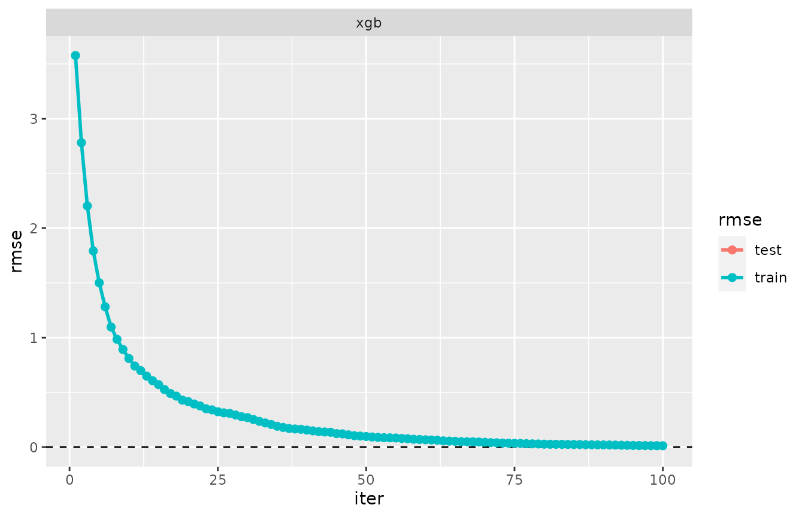
Note that we could also have applied evaluation_log() to
the fitted model fm0.
Cross-validation
Running a cross validation with cv() yields a
cross-validated model, of class “cv”. The evaluation log now includes
both training and test error.
# evaluation log of an object of class "cv"
cvm <- cv(m0)
evaluation_log(cvm)## 'evaluation_log', 1 cross-validated model:
##
## Model 'xgb':
## model class: fm_xgb
## iter train_rmse test_rmse criterion
## 1 3.5736 3.77
## 15 0.5281 2.11
## 30 0.2326 2.05
## 44 0.1239 2.03
## 59 0.0650 2.03
## 63 0.0542 2.03 min
## 73 0.0361 2.03
plot(evaluation_log(cvm))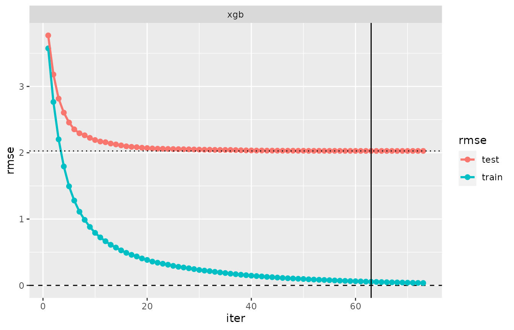
In this plot, the vertical line marks the iteration having minimal
test error. By default, this iteration is considered the
preferred one. In the example, iteration 63 is preferred.
cv_performance() returns training and test error recorded
at this iteration:
cv_performance(cvm)## --- Performance table ---
## Metric: rmse
## train_rmse test_rmse iteration time_cv
## xgb 0.054174 2.0271 63 0.951Back to model and fitted model
If we now take a step back, extracting the model object
from cvm, the information on the best (preferred) iteration
is attached to the resulting model object:
# back to model
m1 <- extract_model(cvm) # or: tune(cvm)
m1## --- A "model" object ---
## label: xgb
## model class: fm_xgb
## formula: Y ~ X1 + X2 + X3 + X4 + X5 + X6 + X7 + X8 + X9 + X10 + g - 1
## data: data.frame [500 x 12], input as: 'data = d'
## response_type: continuous
## call: fm_xgb(formula = Y ~ ., data = data)
## fit: Object of class 'fm_xgb'
## Preferred iteration from cv: iter=63In the final line of the output above, the best iteration according
to cross-validation results is reported. Apart from that,
m1 is identical with the original model object
m0.
Finally, on fitting this model, thus converting a “model” object to a
fitted model, the nrounds argument is adjusted according to
the preference resulting from cross-validation:
# back to fitted model
fm1 <- fit(m1)## set_pref_iter(), model 'xgb', modifications made in call:
## pref_iter=63, nrounds=63, early_stopping_rounds=NULL
getCall(fm1)## fm_xgb(formula = Y ~ ., data = d, nrounds = 63L, pref_iter = 63L,
## early_stopping_rounds = NULL)Note that the number of rounds has been fixed to
nrounds=63 in the fitting call.
Tuning nrounds with tune()
Applying tune() to a IFM without further arguments
triggers a cross-validation and returns the adjusted model
(model or fitted) with “tuned” number of rounds:
tune(m0) # executes m0 %>% cv %>% extract_model
tune(fm0) # executes fm0 %>% model %>% cv %>% extract_model %>% fitRepeated executions will result in varying choices of
nrounds, as new cross-validation groups (folds) are
randomly generated at each execution, leading to different a evaluation
log.
Default metric for xgboost models
“cv” objects based on a model created with fm_xgb()
differ from any other model class in the way how their metric is
selected by default. They currently are the only model type not having
the standard choice, which is rmse for continuous response
and logLoss in the binary case.
Each xgboost model has an eval_metric. If not specified
explicitly by the user, this metric is set depending on the argument
objective in the call to xgb.train() or
fm_xgb(). For example, objective="reg:linear"
has rmse as its default eval_metric, while
objective="binary:logistic" chooses logloss.
In modeltuner, the eval_metric is taken as
the default metric of the resulting “cv” object.
As an example, consider a model using the eval_metric
“mphe” (mean pseudo-Huber error). This is the default
eval_metric for
objective="reg:pseudohubererror".
data(diamonds, package = "ggplot2")
set.seed(1)
diamonds <- diamonds[sample(nrow(diamonds), 5000), ]
xgb_phe <- model(fm_xgb(log(price) ~ . , diamonds, objective = "reg:pseudohubererror"),
base_score = median(log(diamonds$price)),
label = "xgb_pseudohuber")
cv_phe <- cv(xgb_phe)
cv_performance(cv_phe)## --- Performance table ---
## Metric: mphe
## train_mphe test_mphe iteration time_cv
## xgb_pseudohuber 0.0010635 0.0062366 99 5.215The values of the metric “mphe” (and the evaluation log) are read
from the return value of xgb.train() or
xgb.cv() - we actually don’t necessarily need an R function
mphe() evaluating this metric in the
modeltuner implementation.
cv_performance() can still be executed with any
available metric:
cv_performance(cv_phe, metric = "mae")## --- Performance table ---
## Metric: mae
## train_mae test_mae iteration time_cv
## xgb_pseudohuber 0.033856 0.08174 99 5.215In case of doubt on the default metric of a model, one may use the
function default_metric(). It identifies the metric
function that will be used by default:
default_metric(xgb_phe) # no metric function, only a name (values read from xgboost output)## $mphe
## NULL
default_metric(m1) # metric available, only its name## $rmse
## function (actual, predicted, w = NULL, ...)
## {
## sqrt(mse(actual = actual, predicted = predicted, w = w, ...))
## }
## <bytecode: 0x555572646ad8>
## <environment: namespace:MetricsWeighted>Hyperparameter tuning
In this section, we investigate the effect of modifying the value of
parameter max_depth in model m0. A multimodel
is defined by expanding max_depth from 1 to 6:
# Generate a multimodel
mm_depth <- multimodel(m0, prefix = "xgb_depth", max_depth = 1:6,
nrounds = 200)Cross-validation
cv() runs separate cross-validations for the 6 models,
using identical folds for all of them.
cvmm_depth <- cv(mm_depth)
cvmm_depth## --- A "cv" object containing 6 validated models ---
##
## Validation procedure: Complete k-fold Cross-Validation
## Number of obs in data: 500
## Number of test sets: 10
## Size of test sets: 50
## Size of training sets: 450
##
## Models:
##
## 'xgb_depth1':
## model class: fm_xgb
## formula: Y ~ X1 + X2 + X3 + X4 + X5 + X6 + X7 + X8 + X9 + X10 + g
## metric: rmse
##
## 'xgb_depth2':
## model class: fm_xgb
## formula: Y ~ X1 + X2 + X3 + X4 + X5 + X6 + X7 + X8 + X9 + X10 + g
## metric: rmse
##
## 'xgb_depth3':
## model class: fm_xgb
## formula: Y ~ X1 + X2 + X3 + X4 + X5 + X6 + X7 + X8 + X9 + X10 + g
## metric: rmse
##
## and 3 models more, labelled:
## 'xgb_depth4', 'xgb_depth5', 'xgb_depth6'
##
##
## Parameter table:
## max_depth nrounds
## xgb_depth1 1 200
## xgb_depth2 2 200
## xgb_depth3 3 200
## ... 3 rows omitted (nrow=6)
##
## Preferred iterations:
## model 'xgb_depth1': min (iter=144)
## model 'xgb_depth2': min (iter=151)
## model 'xgb_depth3': min (iter=91)
## ... and 3 lines more.The printed output lists details for the first 3 models only by
default. In order to get display details on all 6 models output, we
could use the argument n in print() (output
not shown):
print(cvmm_depth, n = 6)The function extract_pref_iter() extracts the preferred
iterations from a “cv” object:
extract_pref_iter(cvmm_depth)## Preferred iterations:
## model 'xgb_depth1': min (iter=144)
## model 'xgb_depth2': min (iter=151)
## model 'xgb_depth3': min (iter=91)
## model 'xgb_depth4': min (iter=117)
## model 'xgb_depth5': min (iter=99)
## model 'xgb_depth6': min (iter=67)
cv_performance() and evaluation_log()
The output of these functions (be it printed or
plotted) extends what we have seen for a single model above
to the multiple model case:
plot(cv_performance(cvmm_depth))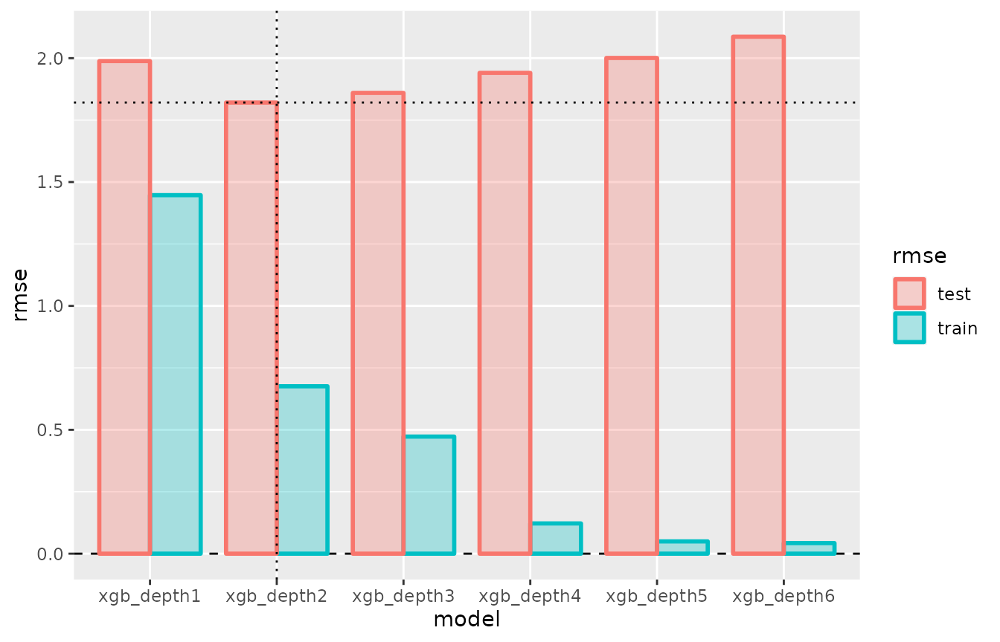
plot(evaluation_log(cvmm_depth))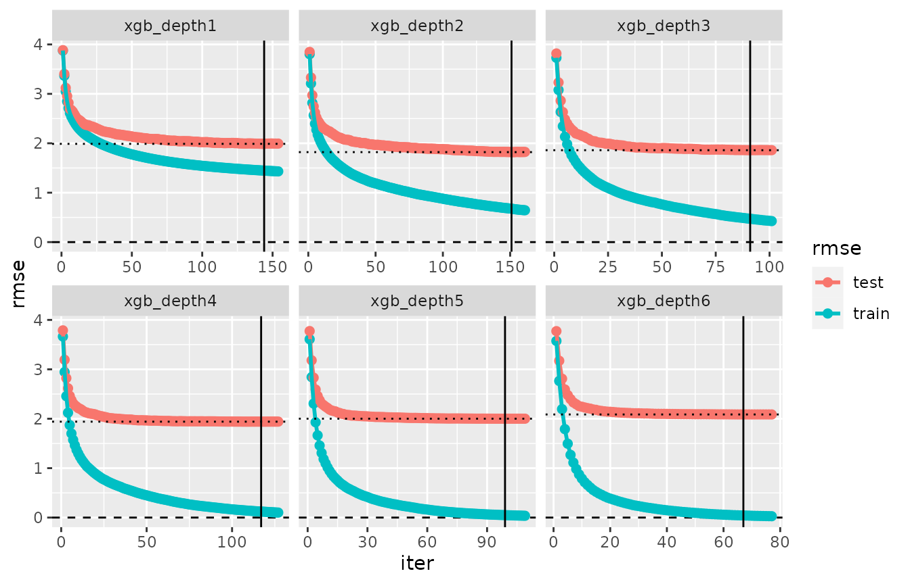
The plot of the performance table can be enhanced by setting
xvar=max_depth:
plot(cv_performance(cvmm_depth), xvar = "max_depth")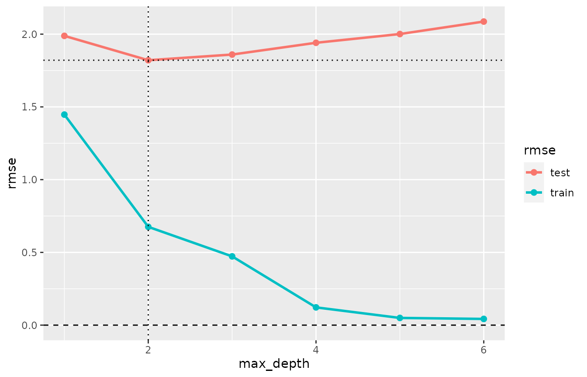
The plot shows how values max_depth>2 do not improve
the predictive performance on unseen data, but increasingly overfit the
training data.
Tuning and extracting a model or fitted model from a “cv” object
Applying tune() to cvmm_depth will pick the
best-performing model (that having lowest test error) and return it.
## set_pref_iter(), model 'xgb_depth2', modifications made in call:
## pref_iter=151, nrounds=151, early_stopping_rounds=NULL
getCall(fm_tuned)## fm_xgb(formula = Y ~ X1 + X2 + X3 + X4 + X5 + X6 + X7 + X8 +
## X9 + X10 + g, data = data, nrounds = 151L, early_stopping_rounds = NULL,
## pref_iter = 151L, max_depth = 2L)Preference criteria for iterations
Basics on preference criteria
So far, it has been assumed throughout that the preferred model is
the one having minimal test error. Depending on the current application
and its goals, other choices may be desirable. For example, some users
may want stable models in the sense that they expect that
fitting the model with different data sets yields results that differ no
too much. In the example of multimodel mm above, the model
with max_depth=2 has the lowest test error, but still the
analyst may favor choosing max_depth=1, as it exhibits less
overfitting.
modeltuner offers various alternative
preference/selection criteria. The default criterion, used in all
examples so far, was
crit_min()## Preference criterion for an iteratively fitted model:
## criterion: crit_min()
## label suffix: "min"
## Selects the iteration with minimal test error.To choose a criterion, you use the argument iter in
cv(). The call cv(mm) could also be written
as
Alternative criteria
Two criteria that avoid selecting a too heavily overfitting model are
crit_se() and crit_overfit(). They are
explained in the printed output below:
crit_se(factor = 2) # default: factor=1## Preference criterion for an iteratively fitted model:
## criterion: crit_se(2)
## label suffix: "2se"
## Selects the first iteration where test error does not exceed
## the minimal test error by more than 2 standard errors.
crit_overfit(ratio = 0.8) # default: ratio=0.9## Preference criterion for an iteratively fitted model:
## criterion: crit_overfit(0.8)
## label suffix: "overfit0.8"
## Selects the iteration with minimal test error among those where
## the ratio of training and test error does not fall below 0.8.More available criteria are
crit_first()
crit_last()
crit_iter(20) # fixed iteration numberSpecifying a criterion in cv()
We now cross-validate the model m0 again, thereby
claiming that the ratio of training and test error remains above 0.75.
We do this by choosing the criterion
iter = crit_overfit(0.75), thus ensuring that predictive
performances are compared between models sharing a similar degree of
overfitting.
# cv()
cvm_ovf075 <- cv(m0, iter = crit_overfit(0.75))
cvm_ovf075## --- A "cv" object containing 1 validated model ---
##
## Validation procedure: Complete k-fold Cross-Validation
## Number of obs in data: 500
## Number of test sets: 10
## Size of test sets: 50
## Size of training sets: 450
##
## Model:
##
## 'xgb':
## model class: fm_xgb
## formula: Y ~ X1 + X2 + X3 + X4 + X5 + X6 + X7 + X8 + X9 + X10 + g - 1
## metric: rmse
##
## Preferred iterations:
## model 'xgb': overfit0.75 (iter=3)
plot(evaluation_log(cvm_ovf075))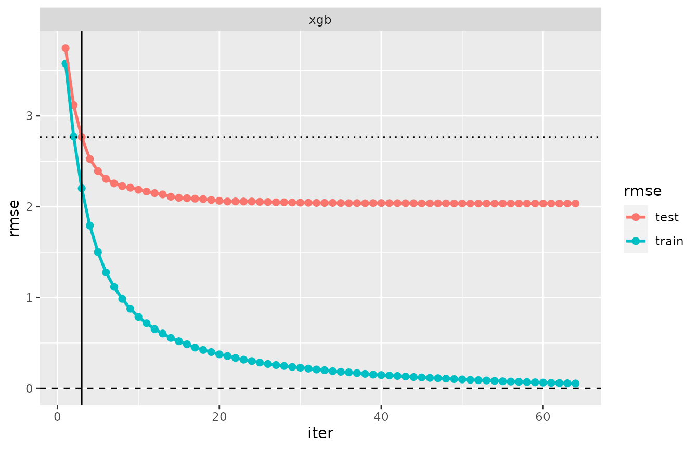
As a consequence of the different choice of a preference criterion,
an earlier iteration (iteration 3) is selected than in cvm1
above with the default iter = crit_min(), where iteration
63 was preferred.
Back to model and fitted model
The preferred iteration is transformed back to a model
and fitted model exactly as shown before in the crit_min()
case:
m_tuned_ovf075 <- extract_model(cvm_ovf075)
fm_tuned_ovf075 <- fit(m_tuned_ovf075)## set_pref_iter(), model 'xgb', modifications made in call:
## pref_iter=3, nrounds=3, early_stopping_rounds=NULL
getCall(fm_tuned_ovf075)## fm_xgb(formula = Y ~ ., data = d, nrounds = 3L, pref_iter = 3L,
## early_stopping_rounds = NULL)Multimodel case
It is now straightforward to repeat the tuning of xgboost’s
hyperparameter max_step with preference
iter = crit_overfit(0.75).
cvmm_ovf075 <- cv(mm_depth, iter = crit_overfit(0.75))
extract_pref_iter(cvmm_ovf075)## Preferred iterations:
## model 'xgb_depth1': overfit0.75 (iter=112)
## model 'xgb_depth2': overfit0.75 (iter=20)
## model 'xgb_depth3': overfit0.75 (iter=9)
## model 'xgb_depth4': overfit0.75 (iter=5)
## model 'xgb_depth5': overfit0.75 (iter=3)
## model 'xgb_depth6': overfit0.75 (iter=3)
plot(cv_performance(cvmm_ovf075), xvar = "max_depth")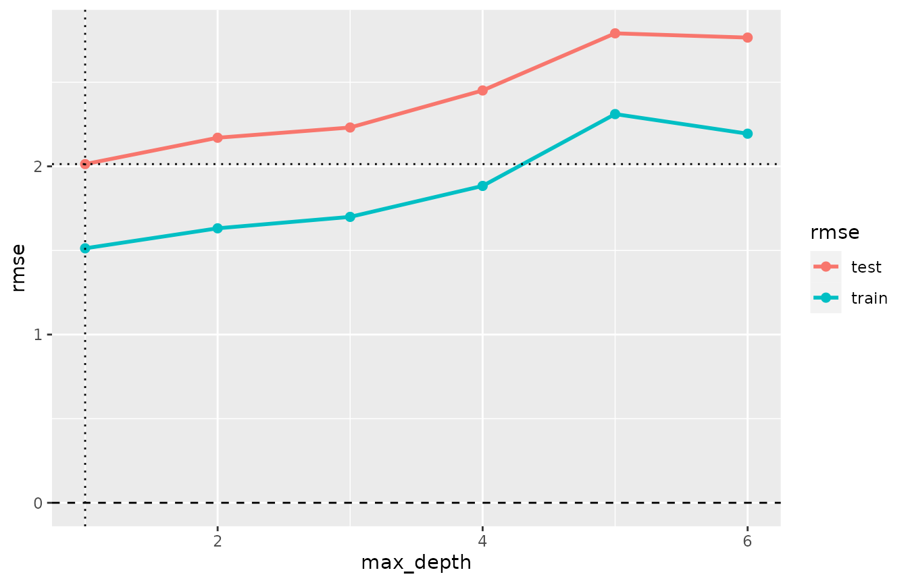
plot(evaluation_log(cvmm_ovf075)) + ggplot2::theme(legend.position = "bottom")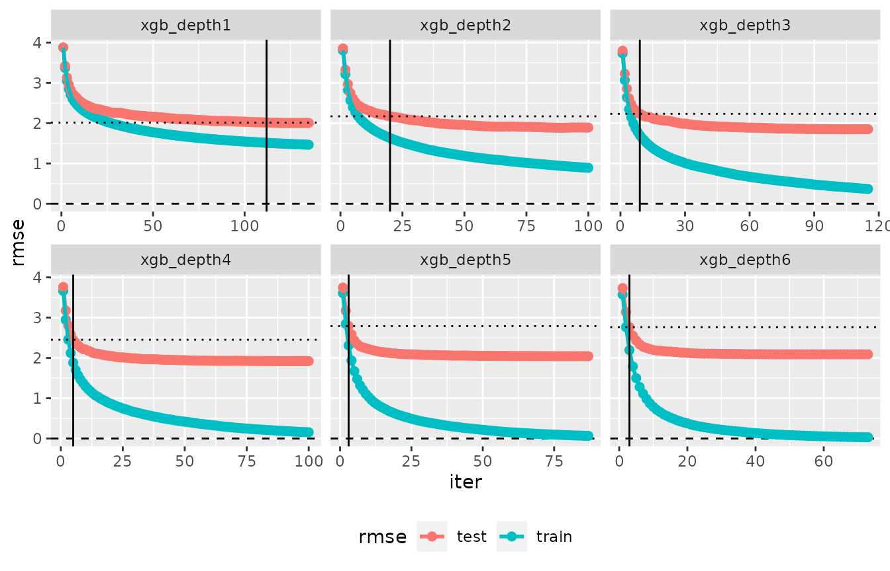
In contrast to hyperparameter tuning based on
crit_min(), where max_depth=2 turned out to be
the choice, tune(cvmm_ovf075) picks
max_depth=1, which reflects the stronger reluctance to
complex and more overfitting models expressed in
iter=crit_overfit(0.75):
tune(cvmm_ovf075)## --- A "model" object ---
## label: xgb_depth1
## model class: fm_xgb
## formula: Y ~ X1 + X2 + X3 + X4 + X5 + X6 + X7 + X8 + X9 + X10 + g
## data: data.frame [500 x 12], input as: 'data = d'
## response_type: continuous
## call: fm_xgb(formula = Y ~ ., data = data, nrounds = 200, max_depth = 1L)
## Preferred iteration from cv: iter=112Multiple preference criteria
cv() accepts multiple preference criteria. You just
enclose the list of criteria in crit_list(...) or in
c(...). The example below uses a model with maximal tree
depth 2, and three preference criteria are given.
m_depth2 <- update(m0, nround = 200, max_depth = 2, label = "xgb_depth2")
cvm_depth2 <- cv(m_depth2, iter = c(crit_min(), crit_overfit(.7), crit_last()))
cvm_depth2## --- A "cv" object containing 1 validated model ---
##
## Validation procedure: Complete k-fold Cross-Validation
## Number of obs in data: 500
## Number of test sets: 10
## Size of test sets: 50
## Size of training sets: 450
##
## Model:
##
## 'xgb_depth2':
## model class: fm_xgb
## formula: Y ~ X1 + X2 + X3 + X4 + X5 + X6 + X7 + X8 + X9 + X10 + g
## metric: rmse
##
## Preferred iterations:
## model 'xgb_depth2': min (iter=100), overfit0.7 (iter=28), last (iter=110)
plot(evaluation_log(cvm_depth2))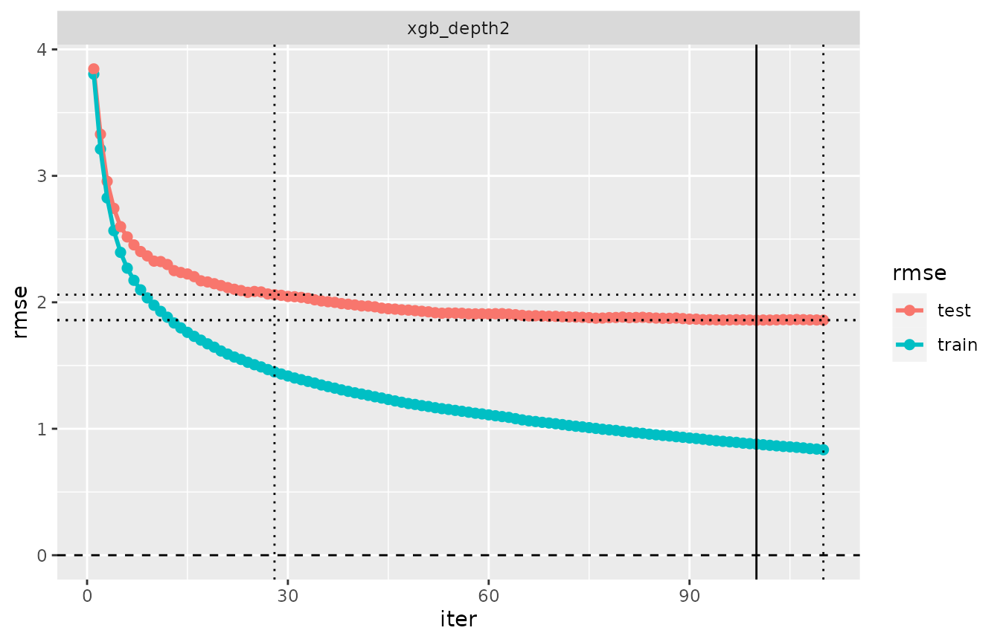
The cross-validated model cvm_depth2 includes three
preference criteria. Let’s call the first of them the primary
criterion. In the picture of the evaluation_log above,
the iteration corresponding to the primary criterion is shown with a
solid line, while all other criteria have a dotted line. In the printed
output of an evaluation log, the primary criterion is marked with an
asterisk:
evaluation_log(cvm_depth2)## 'evaluation_log', 1 cross-validated model:
##
## Model 'xgb_depth2':
## model class: fm_xgb
## iter train_rmse test_rmse criterion
## 1 3.805 3.85
## 23 1.548 2.09
## 28 1.449 2.06 overfit0.7
## 45 1.231 1.95
## 66 1.063 1.89
## 88 0.937 1.88
## 100 0.878 1.86 min*
## 110 0.834 1.86 lastThe role of the primary criterion is that
cv_performance() returns training and test error from that
iteration. The same is true for related functions, such as
cv_predict() or plot.cv().
# cv_performance
cv_performance(cvm_depth2)## --- Performance table ---
## Metric: rmse
## train_rmse test_rmse iteration time_cv
## xgb_depth2 0.87816 1.8584 100 0.564Changing the primary criterion: set_pref_iter()
The primary preference criterion of a “cv” object can be changed with
the function set_pref_iter().
cvm_depth2_modif1 <- set_pref_iter(cvm_depth2, iter = crit_overfit(0.7))
plot(evaluation_log(cvm_depth2_modif1))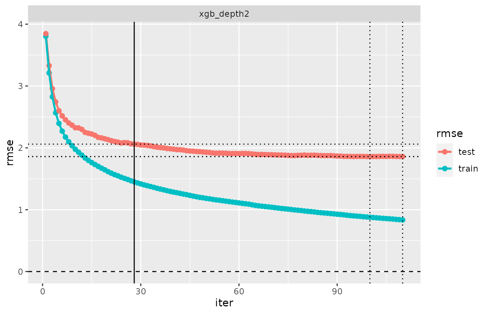
extract_pref_iter(cvm_depth2_modif1)## Preferred iterations:
## model 'xgb_depth2': overfit0.7 (iter=28), min (iter=100), last (iter=110)
cv_performance(cvm_depth2_modif1)## --- Performance table ---
## Metric: rmse
## train_rmse test_rmse iteration time_cv
## xgb_depth2 1.4493 2.0601 28 0.564
# cv_performance() with different metric:
cv_performance(cvm_depth2_modif1, metric = "medae") ## --- Performance table ---
## Metric: medae
## train_medae test_medae iteration time_cv
## xgb_depth2 0.95277 1.3459 28 0.564set_pref_iter() is most useful when you specify a
criterion that has previously been included in the cross-validation. If
a criterion is chosen, some results will not be available:
# set_pref_iter with criteria not stated before in cv(..., iter = )
cvm_depth2_modif2 <- set_pref_iter(cvm_depth2, crit_iter(50))
cv_performance(cvm_depth2_modif2) # available## --- Performance table ---
## Metric: rmse
## train_rmse test_rmse iteration time_cv
## xgb_depth2 1.183 1.9289 50 0.564
# cv_performance() with different metric:
cv_performance(cvm_depth2_modif2, metric = "medae") # required predictions are not available## --- Performance table ---
## Metric: medae
## train_medae test_medae iteration time_cv
## xgb_depth2 NA NA 50 0.564Note the difference: cv_performance() with the
non-default metric="medae" is available for
cvm_depth2_modif1 but not for
cvm_depth2_modif2. The reason is that cross-validation
predictions for iterations selected in the original “cv” object
cvm_depth2 (i.e. for iterations 100, 28, 110) are stored in
that object, but this is not the case for iteration 50. In order to
obtain predictions for iteration 50, we need to re-run a cross
validation, including crit_iter(50) in the list of criteria
(or we could also set keep_fits=TRUE in cv() -
see the section “Evaluation log for alternative metric” below).
expand_pref_iter()
Next, we introduce the function expand_pref_iter(),
which converts a “cv” object with a single cross-validated model and
multiple criteria to a “cv” object having several (essentially
identical) models, but different preference criteria.
cvm_depth2_modif3 <- expand_pref_iter(cvm_depth2)
cvm_depth2_modif3## --- A "cv" object containing 3 validated models ---
##
## Validation procedure: Complete k-fold Cross-Validation
## Number of obs in data: 500
## Number of test sets: 10
## Size of test sets: 50
## Size of training sets: 450
##
## Models:
##
## 'xgb_depth2_min':
## model class: fm_xgb
## formula: Y ~ X1 + X2 + X3 + X4 + X5 + X6 + X7 + X8 + X9 + X10 + g
## metric: rmse
##
## 'xgb_depth2_overfit0.7':
## model class: fm_xgb
## formula: Y ~ X1 + X2 + X3 + X4 + X5 + X6 + X7 + X8 + X9 + X10 + g
## metric: rmse
##
## 'xgb_depth2_last':
## model class: fm_xgb
## formula: Y ~ X1 + X2 + X3 + X4 + X5 + X6 + X7 + X8 + X9 + X10 + g
## metric: rmse
##
## Preferred iterations:
## model 'xgb_depth2_min': min (iter=100)
## model 'xgb_depth2_overfit0.7': overfit0.7 (iter=28)
## model 'xgb_depth2_last': last (iter=110)
cv_performance(cvm_depth2_modif3)## --- Performance table ---
## Metric: rmse
## train_rmse test_rmse iteration time_cv
## xgb_depth2_min 0.87816 1.8584 100 0.564
## xgb_depth2_overfit0.7 1.44932 2.0601 28 0.564
## xgb_depth2_last 0.83375 1.8593 110 0.564
plot(evaluation_log(cvm_depth2_modif3))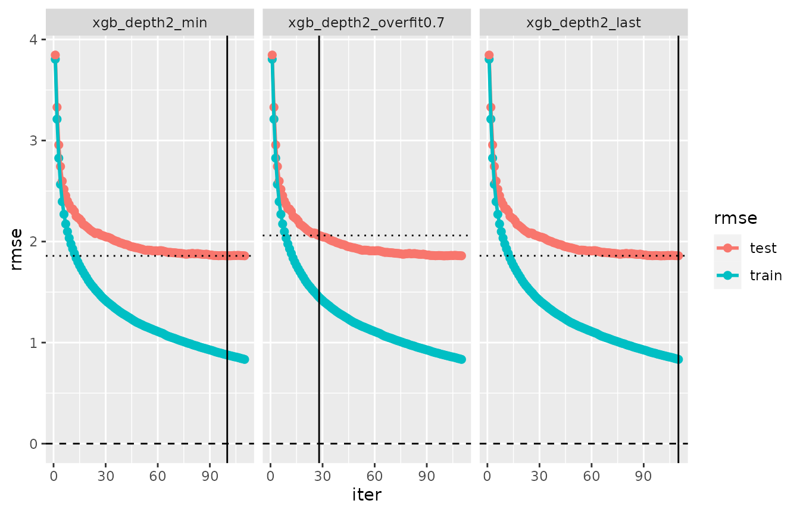
The different structures of cvm_depth2 and
cvm_depth2_modif3 also becomes obvious when comparing the
respective output from extract_pref_iter():
extract_pref_iter(cvm_depth2)## Preferred iterations:
## model 'xgb_depth2': min (iter=100), overfit0.7 (iter=28), last (iter=110)
extract_pref_iter(cvm_depth2_modif3)## Preferred iterations:
## model 'xgb_depth2_min': min (iter=100)
## model 'xgb_depth2_overfit0.7': overfit0.7 (iter=28)
## model 'xgb_depth2_last': last (iter=110)Evaluation log for an alternative metric and
set_metric()
For the object cv_phe generated above (in the section on
“Default metric for xgboost models”), the evaluation log
summarizes the training and test errors for all iterations using the
default metric, as usual. Here, the default metric is mphe,
mean pseudo-Huber error:
evaluation_log(cv_phe) %>% plot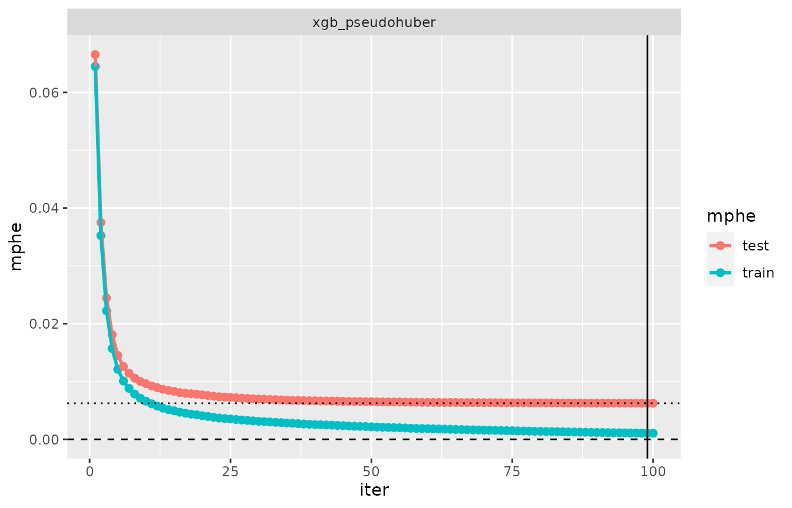
The performance expressed in an alternative metric (for the primary preferred iteration) is obtained with
cv_performance(cv_phe, metric = "mae")## --- Performance table ---
## Metric: mae
## train_mae test_mae iteration time_cv
## xgb_pseudohuber 0.033856 0.08174 99 5.215The computation of the performance table with a different metric
requires the predictions only from the preferred iterations. In
contrast, calculation of an evaluation log for a non-default metric
requires the predictions from all iterations. As a consequence, the
following call won’t produce a useful output (its result is full of
NAs):
evaluation_log(cv_phe, metric = "mae")If the computation of the evaluation log for an alternative metric is
required, one can execute the cross-validation setting
keep_fits = TRUE in cv(). This saves the fits
obtained during cross-validation as a part of the result, such that
calculation of predictions from all iterations is possible, thus
avoiding having to re-run the cross-validation.
cv_phe_fits <- cv(xgb_phe, keep_fits = TRUE,
folds = cv_phe$folds) # use same folds as in cv_phe
evaluation_log(cv_phe_fits, metric = "mae") %>% plot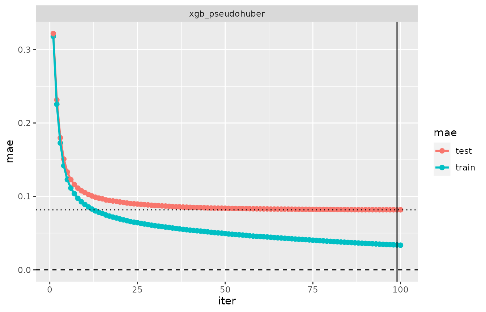
set_metric()
The function set_metric() changes the default metric of
a “cv” object, thereby computing the evaluation log of the model with
that metric. It also re-evaluates the preference criteria such that the
preferred iterations may be different from those in the original “cv”
object. set_metric() does not re-run a cross-validation,
but it requires that the fits are attached to the input “cv”.
cv_phe_mae <- set_metric(cv_phe_fits, "mae")
cv_phe_mae## --- A "cv" object containing 1 validated model ---
##
## Validation procedure: Complete k-fold Cross-Validation
## Number of obs in data: 5000
## Number of test sets: 10
## Size of test sets: 500
## Size of training sets: 4500
##
## Model:
##
## 'xgb_pseudohuber':
## model class: fm_xgb
## formula: log(price) ~ carat + cut + color + clarity + depth + table + x + y +
## z - 1
## metric: mae
##
## Preferred iterations:
## model 'xgb_pseudohuber': min (iter=100)
cv_performance(cv_phe_mae)## --- Performance table ---
## Metric: mae
## train_mae test_mae iteration time_cv
## xgb_pseudohuber 0.033588 0.081736 100 5.217
evaluation_log(cv_phe_mae)## 'evaluation_log', 1 cross-validated model:
##
## Model 'xgb_pseudohuber':
## model class: fm_xgb
## iter train_mae test_mae criterion
## 1 0.3180 0.3220
## 21 0.0681 0.0918
## 41 0.0536 0.0850
## 60 0.0454 0.0831
## 80 0.0388 0.0821
## 100 0.0336 0.0817 minElastic net: fm_glmnet()
In this shorter section on the second class on iteratively fitted models, we use simulated data again. The code below generates a model
\[Y = \beta_1 \cdot X_1 + \beta_2\cdot X_2 + \ldots + \beta_{30}\cdot X_{30} + residual\]
where all \(X_i\) and the residuals are standard normal and \(\beta_i=1/(4i)\) for all \(i\). The beta coefficient are decreasing with \(i\), and we expect that many of them will not have a significant effect on the response \(Y\).
n <- 500; p <- 30
set.seed(1)
x <- matrix(rnorm(n*(p)), n)
beta <- 1/(4*seq(p))
d <- data.frame(y = x%*%beta + rnorm(n), x)
rm(x)We fit a Lasso model, and run a cross-validation including criteria
crit_min() and crit_se(). The usage of the
features related to preference criteria and the selection of iterations
is exactly as in the xgboost case.
fitted_glmnet <- fm_glmnet(y ~., d) # glmnet() with default alpha=1: LASSO
plot(fitted_glmnet) # similar to plot method for class 'glmnet', but a ggplot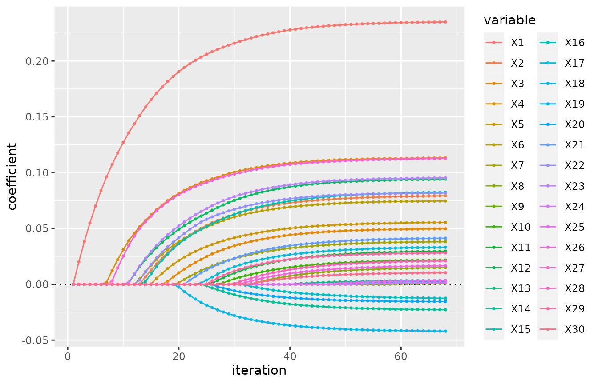
model_glmnet <- model(fitted_glmnet, label = "glmnet")The application of cv(), cv_performance()
and evaluation_log() follows the same logic as for xgboost
model:
cv_glmnet <- cv(model_glmnet, iter = c(crit_min(), crit_overfit(.95)))
cv_glmnet## --- A "cv" object containing 1 validated model ---
##
## Validation procedure: Complete k-fold Cross-Validation
## Number of obs in data: 500
## Number of test sets: 10
## Size of test sets: 50
## Size of training sets: 450
##
## Model:
##
## 'glmnet':
## model class: fm_glmnet
## formula: y ~ X1 + X2 + X3 + X4 + X5 + X6 + X7 + X8 + X9 + X10 + X11 + X12 + X13 +
## X14 + X15 + X16 + X17 + X18 + X19 + X20 + X21 + X22 + X23 + X24 +
## X25 + X26 + X27 + X28 + X29 + X30 - 1
## metric: rmse
##
## Preferred iterations:
## model 'glmnet': min (iter=19), overfit0.95 (iter=19)
# performance table of cv_glmnet:
cv_performance(cv_glmnet)## --- Performance table ---
## Metric: rmse
## train_rmse test_rmse iteration time_cv
## glmnet 0.97368 0.99584 19 0.237
# Plot the evaluation log:
evaluation_log(cv_glmnet) %>% plot(zeroline = FALSE)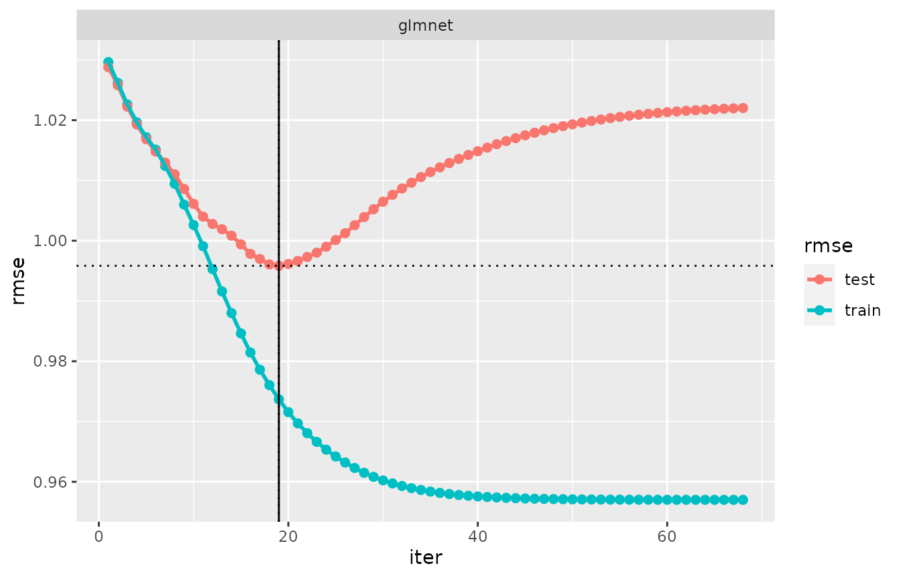
set_pref_iter() and
expand_pref_iter()
Again, the usage of these functions is similar to what has been shown in the section on xgboost models.
set_pref_iter(cv_glmnet, crit_se()) %>% cv_performance # different iteration## --- Performance table ---
## Metric: rmse
## train_rmse test_rmse lambda iteration time_cv
## glmnet 0.97368 0.99584 0.042681 19 0.237
expand_pref_iter(cv_glmnet) %>% cv_performance## --- Performance table ---
## Metric: rmse
## train_rmse test_rmse iteration time_cv
## glmnet_min 0.97368 0.99584 19 0.237
## glmnet_overfit0.95 0.97368 0.99584 19 0.237